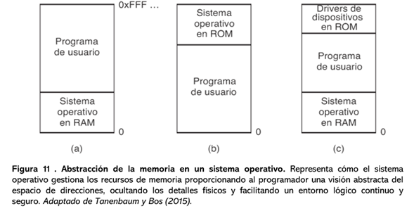

De acuerdo con Tanenbaum y Bos, 2015, p. 198. Es un principio en el cual se dan a los procesos una visión lógica y un espacio de memoria, todo ello es independiente de la estructura física del equipo de cómputo.
Por lo que la capa de abstracción permite que todos los programas se ejecuten sin requerir de ubicar los datos o la secuencia de instrucciones, derivado de ello facilita la portabilidad, seguridad y eficiencia del sistema operativo.
La abstracción se crea mediante el uso de direcciones lógicas o virtuales, en donde estas se generarán dinámicamente en direcciones físicas a través de la paginación, segmentación o dicha memoria virtual de modo que cada proceso tendrá un espacio de memoria continua y exclusivo, además de permitir que se comparta memoria física entre cada proceso.
- Aislamiento y protección: evita que un proceso acceda a la memoria de otro.
- Flexibilidad: facilita la reubicación y ejecución de procesos en distintas áreas de memoria.
- Eficiencia: aprovecha mejor la memoria física mediante técnicas de asignación dinámica y memoria virtual.
Por lo anterior se puede establecer que la abstracción de memoria permite tener un espacio físico limitado para su función lógica y flexible además de garantizar la estabilidad, seguridad y realizar multitareas en forma eficiente en los sistemas operativos.
Figura 02
Abstracción de la memoria en un sistema operativo
Representa cómo el sistema operativo gestiona los recursos de memoria proporcionando al programador una visión abstracta del espacio de direcciones, ocultando los detalles físicos y facilitando un entorno lógico continuo y seguro.
Nota: Adaptado de Tanenbaum y Bos (2015).